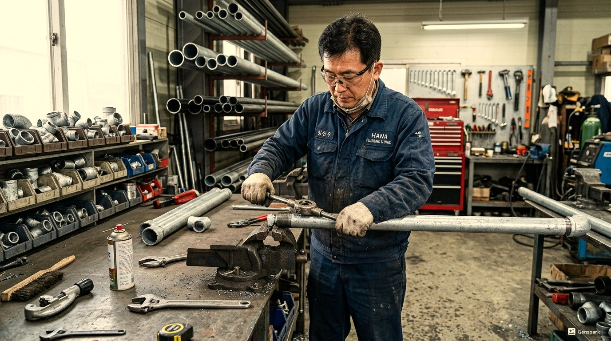
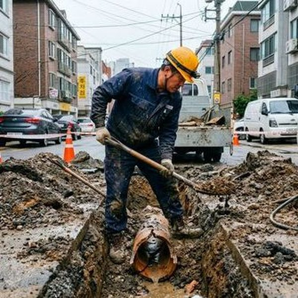
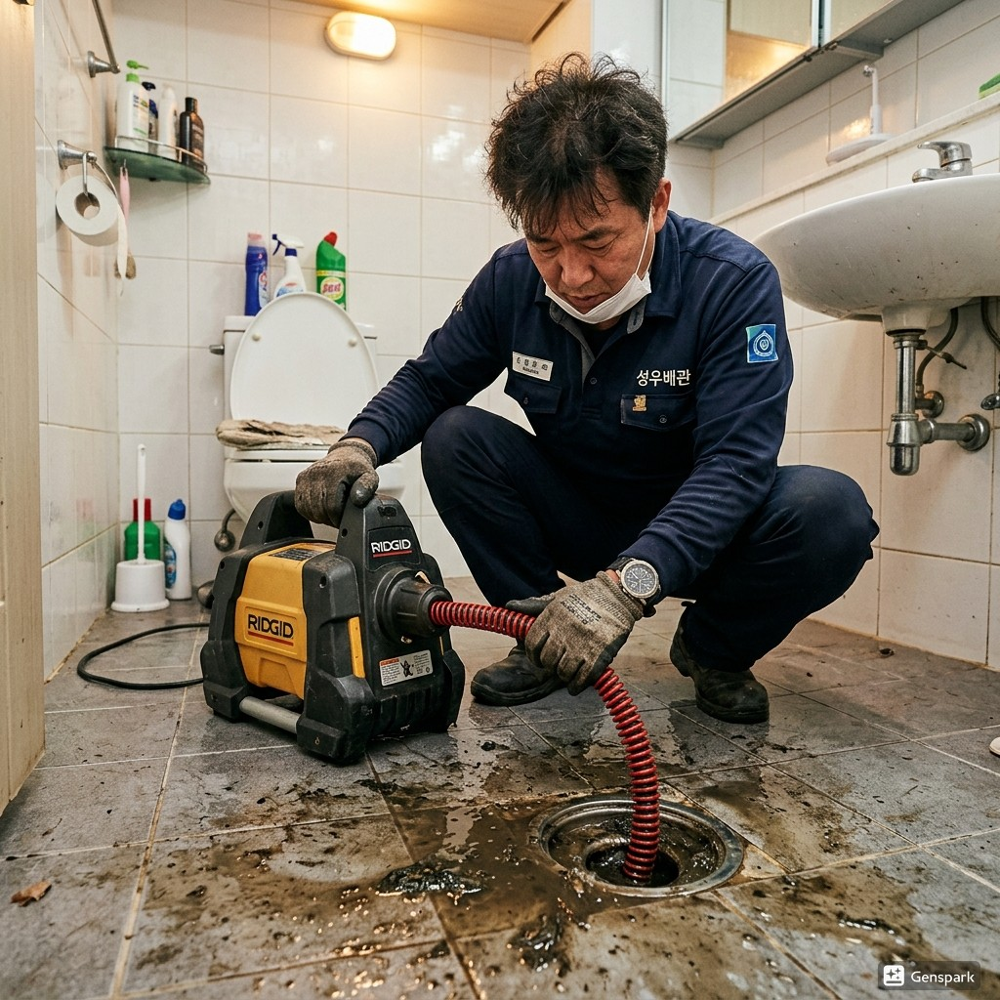

고양의 싱크대막힘는 건물의 나이와 구조에 따라 발생 패턴이 다릅니다. 1980년대 신도시. 고층 아파트 단지 밀집, 초대형 쇼핑몰 다수로 배관 부하 높음 고양의 특성상 이러한 문제가 자주 발생하며, 빠른 대응이 필요합니다.

▲ 고양 현장에서 전문 장비로 싱크대막힘 해결 작업 중
제우스시설관리는 싱크대막힘 문제를 해결하기 위해 최첨단 전문 장비를 갖추고 있습니다. 드레인 기계로 막힘을 물리적으로 제거하고, 관로 내시경 카메라로 정확한 원인을 파악하며, 고압세척기로 배관 내부를 완벽하게 청소합니다. 고양 전역에 서비스 인력을 배치하여 28분 내 출동 가능합니다.

▲ 전문 장비를 이용한 싱크대막힘 해결 작업
고양에서 싱크대막힘가 발생하는 주요 원인 중 하나는 '음식물 찌꺼기와 기름때 축적'입니다. 이는 고양의 지리적 특성과 도시 구조로 인한 자연스러운 결과입니다. 문제를 방치하면 더 큰 배관 손상으로 이어질 수 있으므로, 초기 증상이 보일 때 즉시 전문가 상담을 받는 것이 중요합니다.
✅ 드레인 기계 - 스프링 와이어로 배관 내 이물질을 물리적으로 파쇄·제거
✅ 관로 내시경 카메라 - 배관 내부를 실시간 영상으로 확인하여 정확한 진단
✅ 고압세척기 - 최대 200bar 고압수로 배관 내벽 오염물 완벽 세척
✅ 관로탐지기 - 매설 배관의 위치와 깊이를 정확히 탐지

▲ 제우스시설관리의 최첨단 장비로 신속하고 정확하게 처리
고양 전 지역에 28분 내 출동합니다. 야간·주말·공휴일 추가 요금 없이 동일한 서비스를 제공합니다.
싱크대 배수관은 U자형 트랩 구조로 되어 있어 기름기와 음식물이 특히 잘 쌓입니다. 뜨거운 물로 기름을 녹이는 것은 일시적일 뿐, 하류에서 다시 응고되어 문제가 반복됩니다.
주방 싱크대의 경우 배수관 굵기가 보통 50mm로, 욕실 배수관(75~100mm)보다 좁아 막힘에 더 취약합니다. 음식물 분쇄기(디스포저) 사용 가구에서는 분쇄된 미세 입자가 배관에 축적되는 경우도 많습니다.
Step 1. 전화 상담
싱크대 배수 상태와 증상을 청취, 가능한 원인을 미리 파악합니다.
Step 2. 현장 출동
28분 내 전문 기술자가 드레인 기계, 고압세척기를 가지고 방문합니다.
Step 3. 트랩 및 배관 점검
싱크대 트랩을 분해하여 1차 점검하고, 필요시 내시경으로 배관 깊숙한 곳까지 확인합니다.
Step 4. 기름때 및 이물질 제거
드레인 기계로 막힌 부분을 관통하고, 고압세척으로 기름때를 완전히 제거합니다.
Step 5. 정상 배수 확인
충분한 양의 물을 흘려보내 배수 속도가 완전히 정상인지 확인합니다.
Step 6. 예방 가이드 안내
재발 방지를 위한 올바른 싱크대 사용법과 정기 청소 주기를 안내합니다.
건물 유형: 신축 아파트 입주 1년 | 지역: 고양
양쪽 싱크대 배수가 동시에 느려짐. 합류 지점에서 음식물 분쇄기 잔여물이 축적되어 막힘 발생. 분쇄기 연결부 분리 후 청소 및 배관 세척. 작업 시간 40분.
건물 유형: 1층 음식점 | 지역: 고양
싱크대에서 음식물 썩는 냄새와 함께 물이 역류. 배관 내 음식물 부패 + 하수 본관 부분 막힘 복합 원인. 본관 청소 후 싱크대 배관 전체 세척. 작업 시간 1시간.
예상 비용: 5만원~10만원 (부가세 별도)
비용 결정 요소: 기름때 정도, 배관 구조
💡 제우스시설관리 특별 정책
✅ 출장비 무료 - 현장 방문 후 견적만 받고 취소해도 비용 없음
✅ 미해결시 비용 0원 - 문제가 해결되지 않으면 한 푼도 받지 않음
✅ 사전 견적 안내 - 작업 시작 전 정확한 비용을 먼저 안내
✅ 추가 비용 없음 - 야간/주말/공휴일 동일 요금
뜨거운 물을 부어 기름을 녹이는 방법은 일시적입니다. 녹은 기름이 하류에서 다시 응고되어 더 깊은 곳에서 막힘이 발생합니다. 기름은 반드시 별도 용기에 모아 종량제 봉투에 버려주세요.
A. 식용유, 기름기가 배관 내벽에 응고되어 점차 쌓이고, 여기에 음식물 찌꺼기가 걸려 막힘이 발생합니다. 특히 겨울철에는 찬물로 기름이 더 빨리 응고되어 빈도가 높아집니다.
A. 네, 배수 속도가 느려진 것은 배관 내부에 기름때와 음식물 찌꺼기가 축적되고 있다는 초기 신호입니다. 방치하면 완전히 막힐 수 있으므로 조기에 전문가 점검을 받는 것이 좋습니다.
A. 일반적인 기름때 막힘은 30분~1시간 내 해결됩니다. 배관 깊숙한 곳의 심한 막힘이나 배관 노후로 인한 경우 추가 시간이 필요할 수 있으며, 현장에서 정확한 소요 시간을 안내합니다.